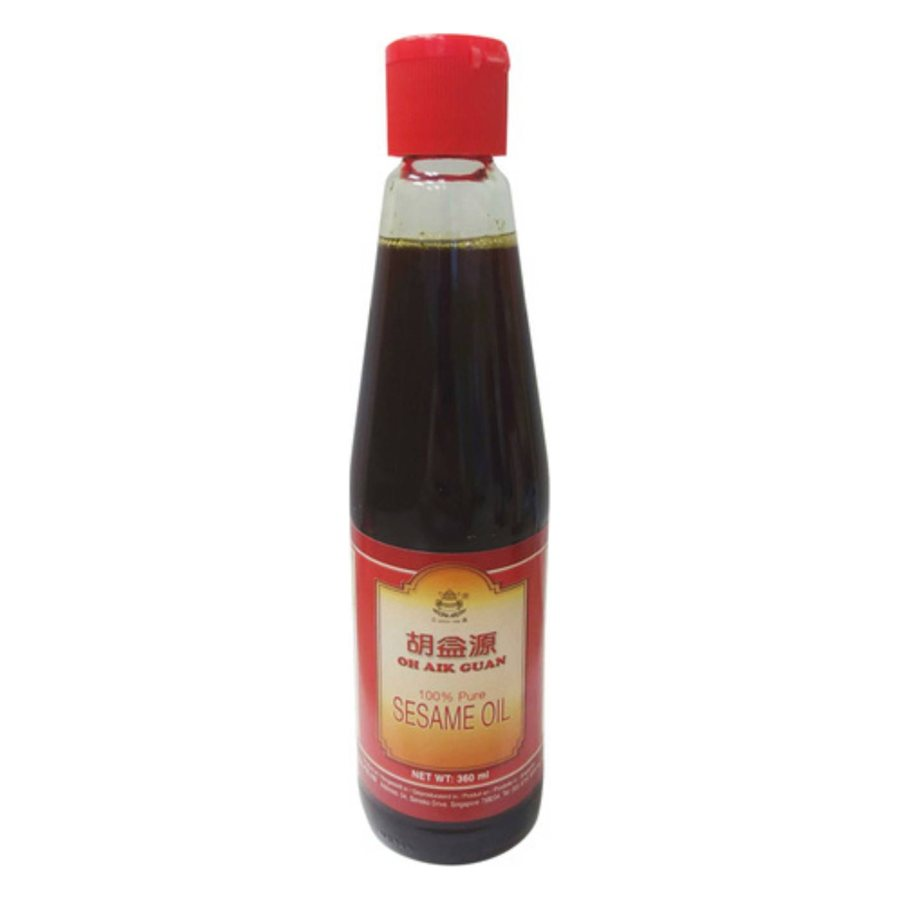
Referenzbild: Oh Aik Guan · Asiafoodland.de. Zeigt den Produkttyp, nicht das Produkt des chinesischen Herstellers.
Sesamöl, geröstet, Glasflasche 250 ml
Reines, geröstetes Sesamöl in der Klarglasflasche: das Aroma-Finish für Wok, Nudeln, Dips und Dressings.
Technische Daten
| Inhalt / Gebinde | 270 ml (ca. 250 g) transparente Glasflasche; Karton à 24 oder 48 Flaschen |
|---|---|
| Zutat | Sesamsaat |
| Verfahren | Geröstet und heiß gepresst (Listing: 'Refined & Hot pressed') |
| Sensorik | Leuchtend goldgelb, kräftiges Sesamaroma, Aroma-Öl zum Finish |
| Haltbarkeit | 24 Monate (laut Listing) |
| Zertifikate (Herstellerangabe) | BRC, HACCP, ISO 22000, QS, Kosher, Halal, FDA-Nummer |
| Kapazität / Lieferzeit | 10 Mio. Flaschen pro Jahr; 15–25 Tage nach Anzahlung |
| Private Label | OEM mit eigenem Etikett ab MOQ möglich |
Intern
Details & Kontakt
Selbstbeschreibung: Handelsunternehmen seit 2001 mit eigenen Fabriken und Partnerfabriken; TÜV-Rheinland-Audit (MIC-ASR231701), Diamond Member seit 2010, Kapazität 10 Mio. Flaschen pro Jahr, Zertifikate BRC, HACCP, ISO 22000, QS, Kosher, Halal, FDA, Messeauftritte u. a. auf der Food-Messe in Deutschland.
Alternative Hersteller (1)
Eigene Angabe: seit 2000 tätig, OEM/ODM für Gastronomie, Hotels und Supermärkte; Zertifikate ISO 9001, HACCP, Kosher, Halal (Profil) sowie BRC und IFS (Produktlisting); Lieferzeit in der Nebensaison innerhalb von 15 Arbeitstagen.
Mehr
Je Liter: DE 22,19 € brutto (Regelpreise im Asiafoodland-Sortiment 19,98–56,19 €/l) gegenüber rechnerisch ca. 3,56–7,37 USD/l ab Werk (0,96–1,99 USD ÷ 0,27 l). Ein Wettbewerbsartikel mit exakt 250 ml und Preis wurde nicht gefunden.
- Einstandspreis
- 1,08 €
- Verkaufspreis (netto)
- 5,71 €
- Marge
- 4,62 € · 81,0 %
- Zielpreis China
- 3,40 €
- Ersparnis ggü. DE-Kauf
- 83,9 %
- Mindestmenge
- 4.800 Flaschen
- Preisbasis
- FOB
je Stück, netto. China-Preise sind Listenpreise (nicht verhandelt). Fracht, Zoll und Abwicklung sind Annahmen; Einfuhrumsatzsteuer ist als Vorsteuer abziehbar. Annahmen: Fracht je Warengruppe, 3 % Abwicklung, Verkauf 15 % unter DE-Marktpreis, Zielmarge 25 %.
Beschreibung
Geröstetes Sesamöl wird aus gerösteten Sesamsamen gepresst und erst am Ende des Garvorgangs oder kalt eingesetzt: Wenige Tropfen geben Nudelgerichten, Suppen …
Mehr
Dips und Marinaden das nussig-röstige Aroma der chinesischen Küche. Die Ware des gewählten Lieferanten ist laut Listing ein reines Sesamöl in der transparenten Glasflasche (270 ml, ca. 250 g Füllgewicht) mit leuchtend goldgelber Farbe, kräftigem Sesamduft und 24 Monaten Haltbarkeit. Entscheidend für den deutschen Markt sind Reinheit (100 % Sesam, keine Beimischung anderer Öle), chargenweise Analytik zu Ethylenoxid, PAK und Mykotoxinen sowie ein deutsches Etikett mit hervorgehobenem Allergen Sesam. Mit BRC-, HACCP-, ISO-22000-, Kosher- und Halal-Zertifikaten (Herstellerangaben) und Private-Label-Abfüllung lässt sich das Öl als Eigenmarke neben Sojasauce und Glasnudeln platzieren.
Zoll
| Zolltarifnummer | 15155019 |
|---|---|
| Zollsatz | 6.4 % |
Normen & Kennzeichnung (Deutschland/EU)
Reg. (EU) 1169/2011Lebensmittelinformation: Kennzeichnung, Allergen Sesam hervorgehoben, MHD, NährwerteReg. (EU) 2023/915Höchstgehalte für Kontaminanten (u. a. Benzo[a]pyren/PAK in Ölen, 3-MCPD- und Glycidyl-Ester in Pflanzenölen)Reg. (EG) 396/2005Rückstandshöchstgehalte für Pestizide (u. a. Ethylenoxid/2-Chlorethanol bei Sesam)Reg. (EG) 852/2004Lebensmittelhygiene, HACCP-VerfahrenReg. (EG) 1935/2004Materialien mit Lebensmittelkontakt (Glasflasche, Verschluss, Dichtung), ergänzend LFGBVerpackGVerpackungsgesetz: LUCID-Registrierung und Systembeteiligung für Verkaufsverpackungen
Intern · Notizen
E-Commerce-Potenzial
Sesamöl ist der klassische Zusatzkauf zu Sojasauce und Nudeln.
Mehr
Belegt: Asiafoodland führt in der Kategorie Öle & Fette zehn Sesamöl-Artikel (u. a. Oh Aik Guan, Yeo's, Amoy, Ottogi, LKK) mit Grundpreisen von 19,98 bis 56,19 €/l (Regelpreise; ein 150-ml-Öl ist befristet für 1,00 € im Angebot); Oh Aik Guan kostet 3,99 € (150 ml), 7,99 € (360 ml) und 12,99 € (650 ml), Yeo's 7,49 € (150 ml) bis 24,99 € (640 ml). Das LKK-Öl ist laut Produkttitel mit Sojabohnenöl vermischt: ein reines 100-%-Sesamöl lässt sich daher gegen das Massenprodukt absetzen. Auch REWE führt eine eigene Sesamöl-Kategorie, die Konkurrenz reicht also bis in den Supermarkt. Risiken: Glasbruch und Auslaufen im Versand, Preisdruck durch Markenware und hohe Anforderungen an die Rückstandsanalytik bei Sesam. Empfohlen als Cross-Sell im Bundle mit Sojasauce und Glasnudeln, nicht als Traffic-Treiber. Absatzzahlen sind nicht belegt.
Vom Lieferanten anfordern
- Reinheit schriftlich und analytisch belegen (Fettsäureprofil, Sesamin/Sesamolin): 100 % Sesamöl ohne Beimischung; der Titelzusatz 'Blended' in zwei Kwangna-Listings ist vorab zu klären
- Je Charge Analysen zu Ethylenoxid/2-Chlorethanol und Pestiziden (Reg. (EG) 396/2005) sowie PAK/Benzo[a]pyren bei Röstöl, Aflatoxin B1 und Schwermetallen
- BRC-/IFS-Zertifikat mit Scope (Sesamöl, Abfüllstandort) anfordern; da Kwangna Handelsunternehmen ist, Werksadresse der Abfüllung und Audit-Bericht verlangen
- Glasflasche, Verschluss und Dichtung: Konformitätserklärung nach Reg. (EG) 1935/2004; Bruch- und Auslaufprüfung im Versandkarton (24er/48er)
- Deutsches Etikett prüfen: Allergen Sesam hervorgehoben, MHD, Importeur/Inverkehrbringer, Füllmenge; Musterfreigabe vor Serienproduktion
- Zolleinreihung (KN 1515 50 19 roh vs. 1515 50 99 raffiniert) per verbindlicher Zolltarifauskunft klären, bevor Preise kalkuliert werden
Quellen
Preis je Stück ('Piece') laut Listing; da die Spezifikation Flaschen à 270 ml in 24er/48er-Kartons nennt, als Flaschenpreis gelesen. Spanne 0,96–1,99 USD bei MOQ 4.800 Stück, die Staffelung nach Gebinde/Etikett ist nicht aufgeschlüsselt. Muster 0,10 USD je Stück zzgl. Versand. Ohne Fracht, Zoll, EUSt und Analysekosten. Zwei weitere Kwangna-Listings (KNOF2-270ML-7; 270 ml '100% Pure Blended Sesame Oil') nennen 0,96–1,99 bzw. 0,97–2,00 USD: der Titelzusatz 'Blended' ist vor Bestellung zu klären (100 % Sesam vs. Mischöl). Seite per Abruf erreichbar (HTTP 200).
Passt dazu
Zubehör, Verbrauchsmaterial und Produkte, die Händler zusammen mit diesem Artikel verkaufen.


Weitere Produkte dieser Kategorie
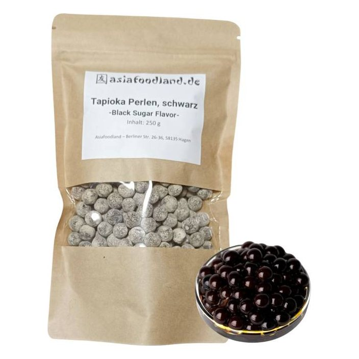
Trend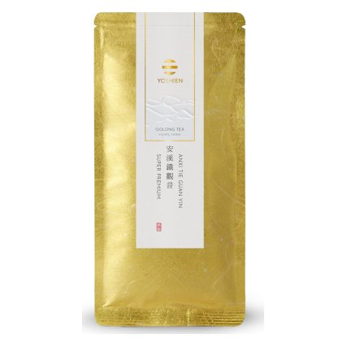
Upsell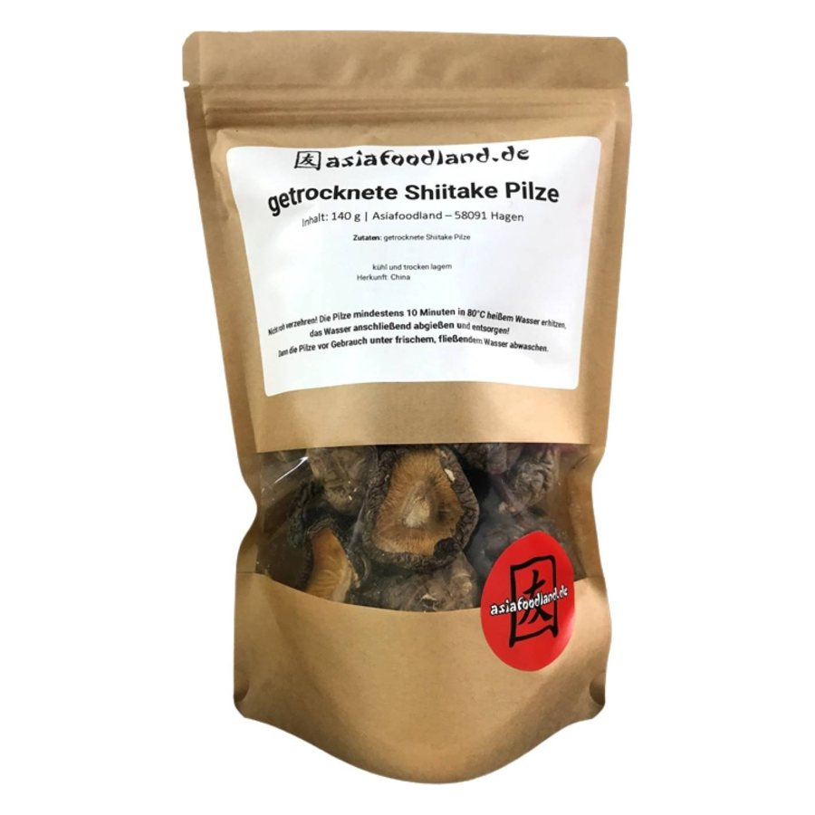
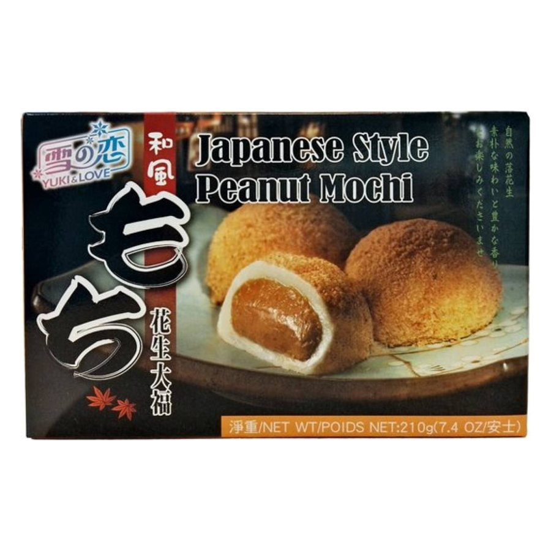
Trend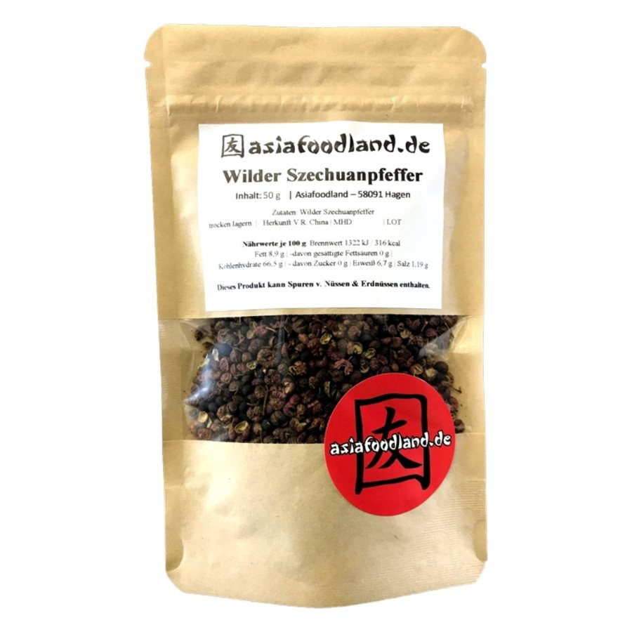
Cross-Sell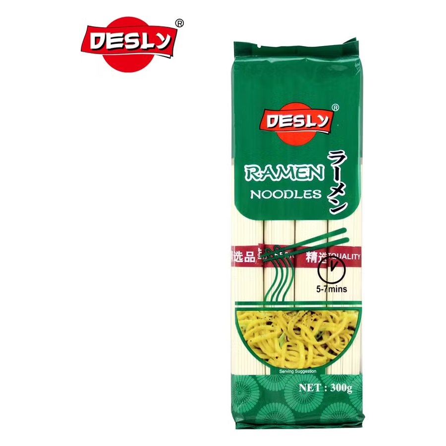
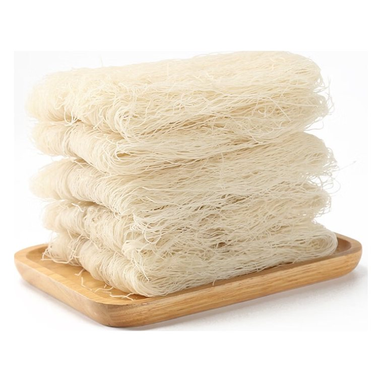
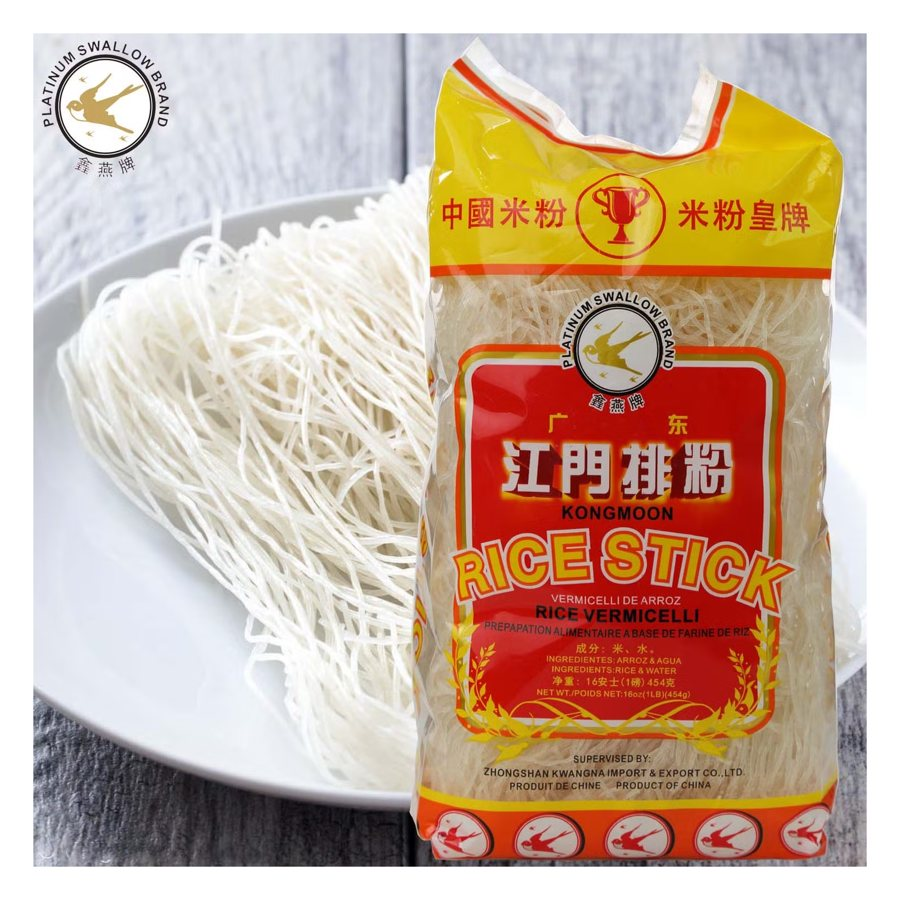
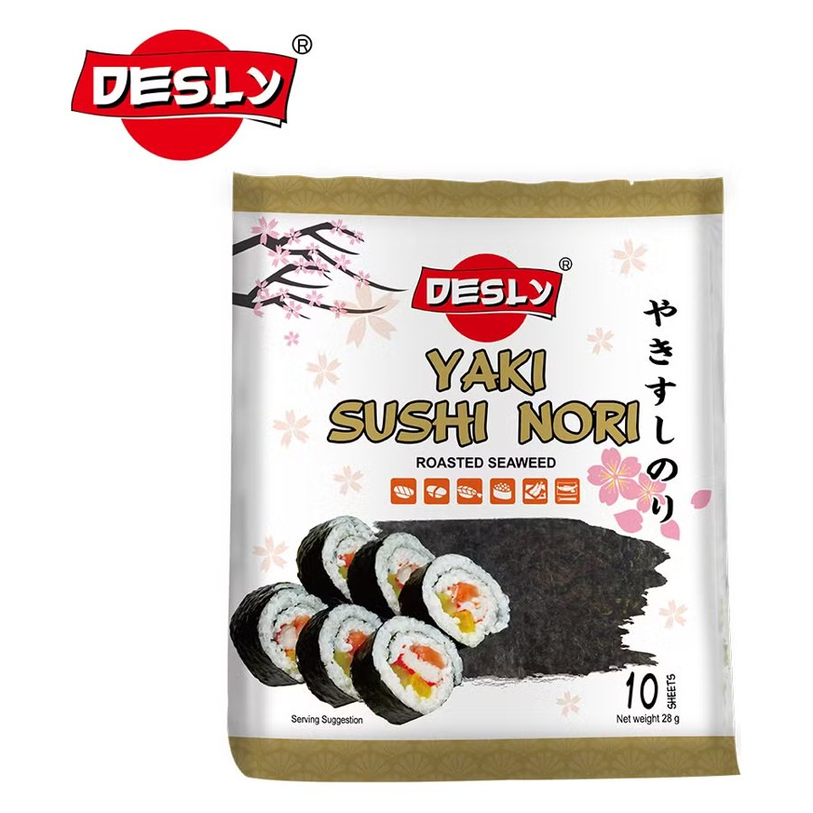
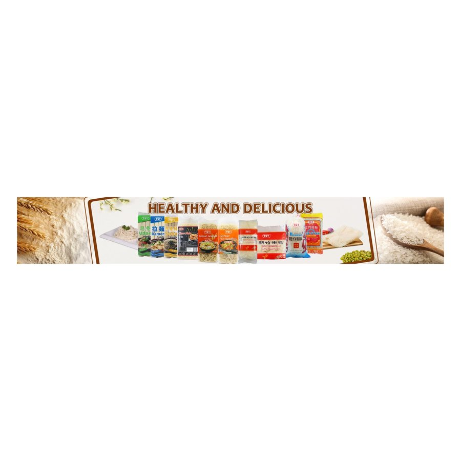
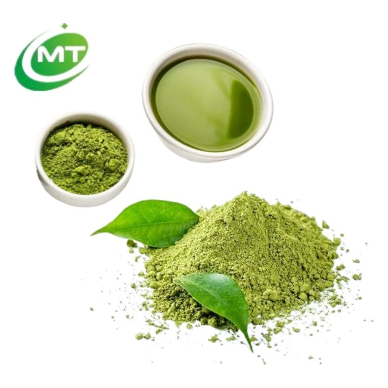
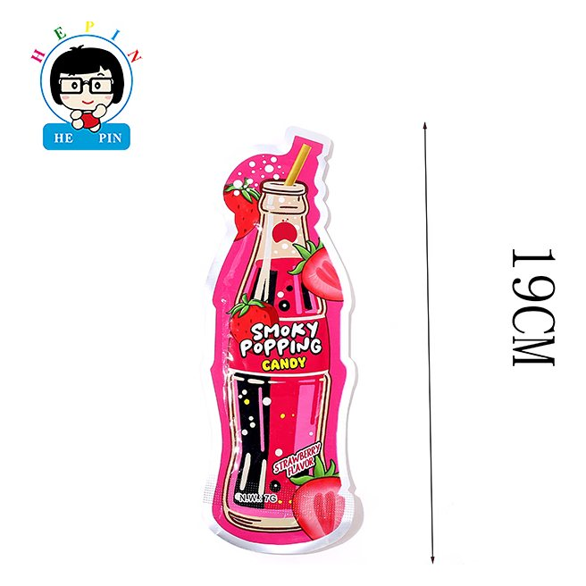
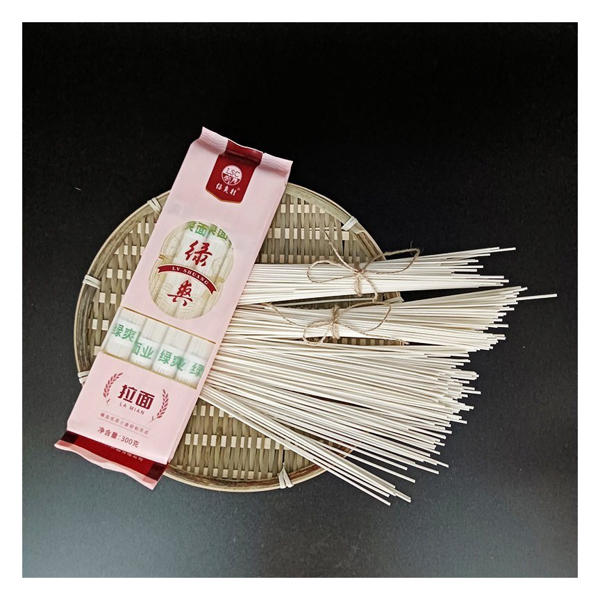